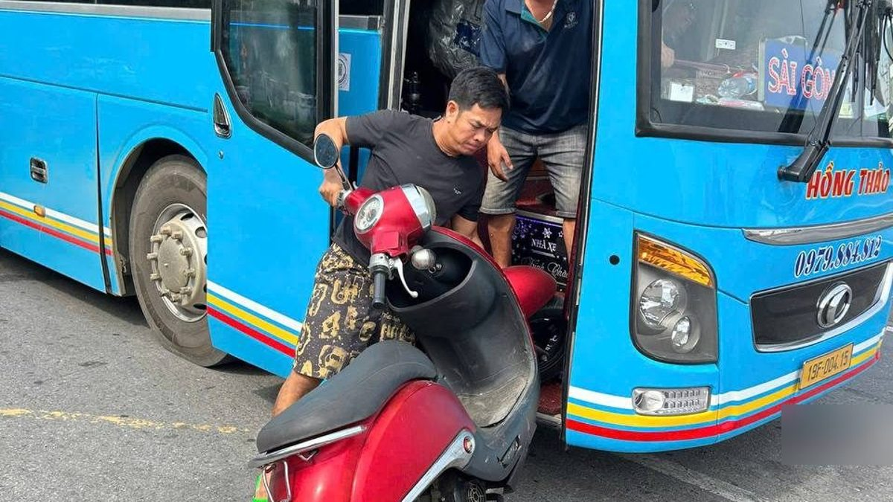
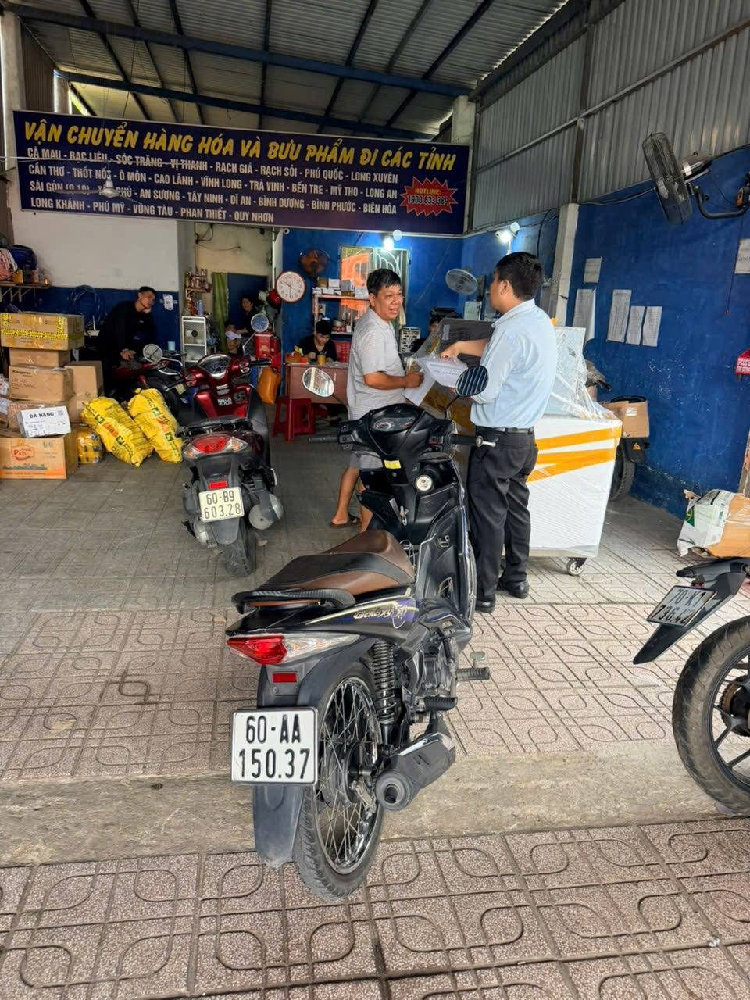
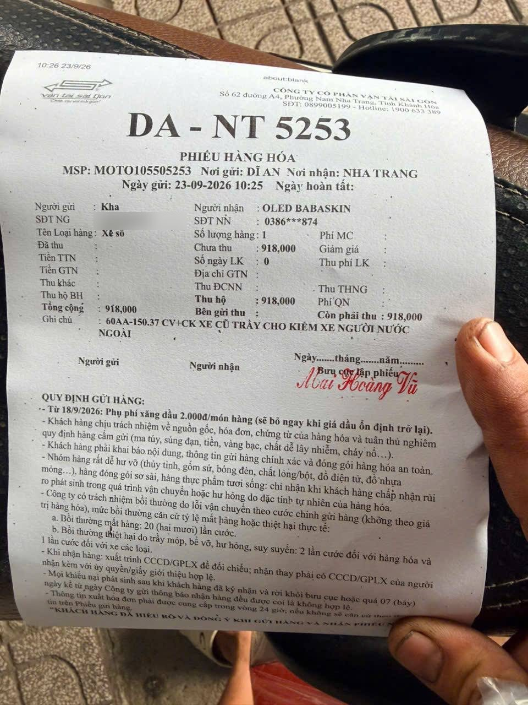
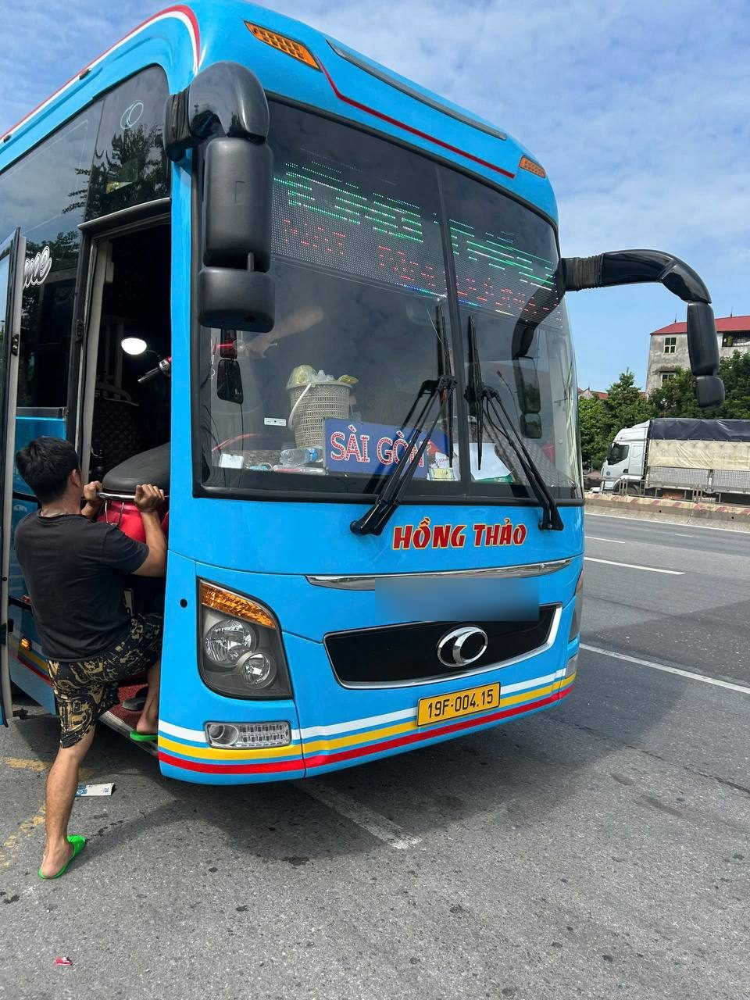
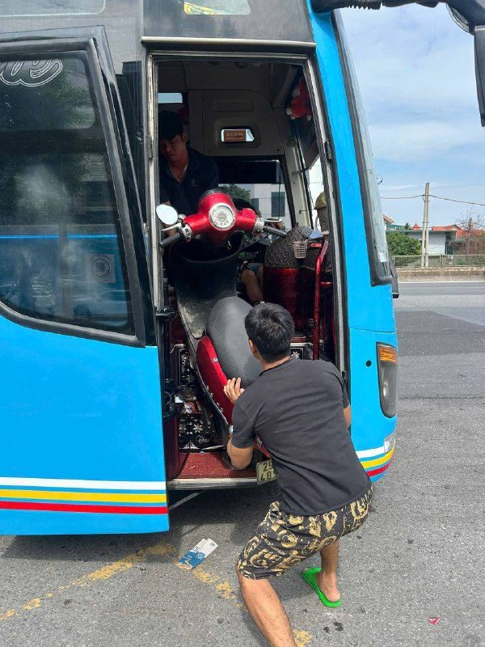
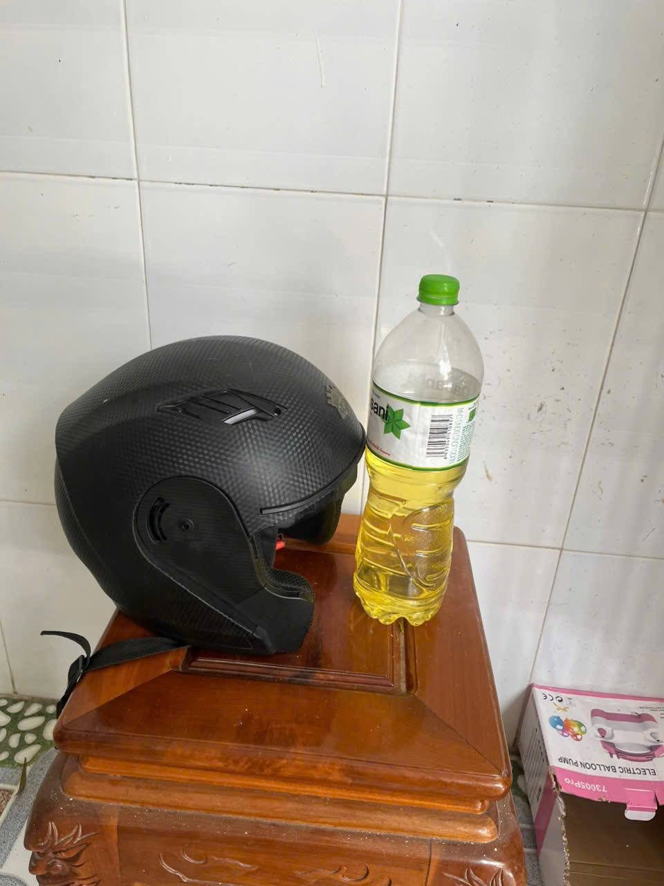
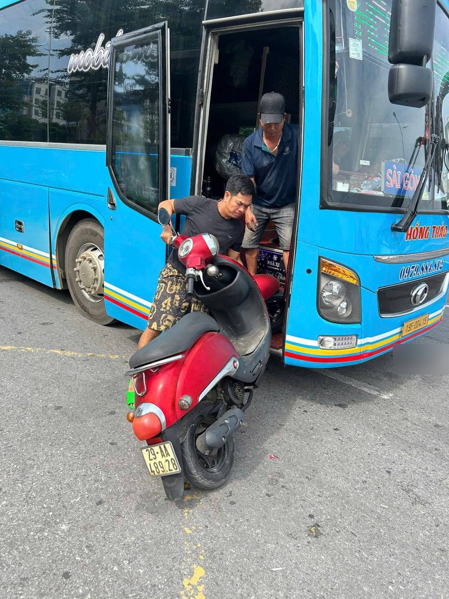
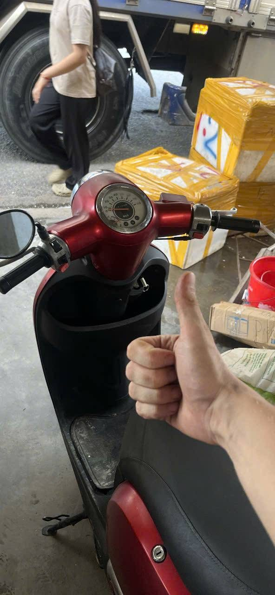

Байки во Вьетнаме продают по всей стране — на Chợ Tốt, в Facebook, в Zalo. Подходящий байк можно найти в другом регионе и привезти в Нячанг. Мы сами покупаем байки именно так. Ниже — вся схема по шагам, с фото наших реальных покупок и честными рисками.
Самое главное — продавец. Откройте его профиль в объявлении и в Zalo.
Попросите фото документов (cà vẹt) и видео, где байк заводится, едет и тормозит. Смотрите, насколько адекватно ведёт себя продавец. Как проверить, что байк действительно 50cc по документам, — в отдельной статье.
Способ доставки нужно согласовать с продавцом до оплаты. Вариантов два.
Официально, по паспорту: продавец отправляет байк на ваше имя и паспорт, вы забираете его в офисе компании в Нячанге. Дороже, но всё оформлено.


Неофициально: продавец находит водителя автобуса, который постоянно ездит по Вьетнаму и приезжает в Нячанг. В нужный день вы созваниваетесь с водителем, он говорит, на какой остановке и во сколько будет, — вы приезжаете и забираете байк. Сложнее, но дешевле.


Выберите способ и объясните его продавцу. Если он согласен — переходите к оплате.
Оплата — переводом на банковский счёт продавца или по QR-коду. После оплаты продавец отправляет байк сам или находит человека, который отвезёт его в транспортную компанию или к автобусу.
В назначенный день возьмите шлем и бензин и поезжайте в офис транспортной компании или на автобусную остановку. Оплатите доставку, примите байк, залейте бензин и доедьте до дома.



Отвезите байк в мастерскую: замените масло, проверьте шины и тормоза. После этого можно спокойно ездить.
Купить байк онлайн в другом регионе — реально, мы сами так покупаем. Но это время, риск и много нюансов. Каждый байк в нашем каталоге прошёл весь этот путь: мы нашли его, проверили, оплатили, привезли, получили и подготовили. Поэтому цена байка у нас немного выше, чем у продавца в объявлении.